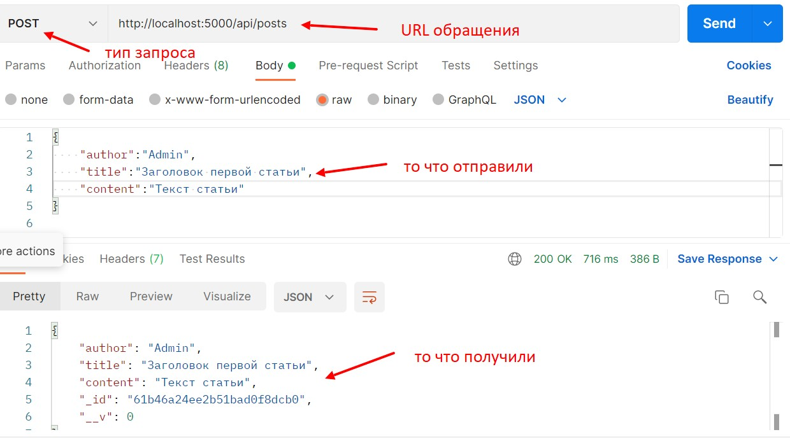

Хранить эндроинты в главном JS файле плохая практика, поэтому вынесем их в отдельный файл
Первое что нужно сделать это импортировать класс Router из express и создать экземпляр этого класса
Далее использую экземпляр класса создаем все варианты обращения к эндпоинту
Не забываем экспортировать экземпляр класса по default
Методы запросов у Router принимают первым аргументом endpoint (т.е. по какому адресу будет доступен), вторым аргументом передается callback который получит два аргумента request и response. Callback должен быть ассинхронным. По сути это та же функция с помощью которой мы добавляли запись в предыдущем разделе.

Возвращаемся в index.js. Эндроинт в котором мы обращались к постам можно удалить. Затем импортируем только что созданный router (расширение js обязательно)
Теперь регистрируем наш роутер с помощью метода app.use
